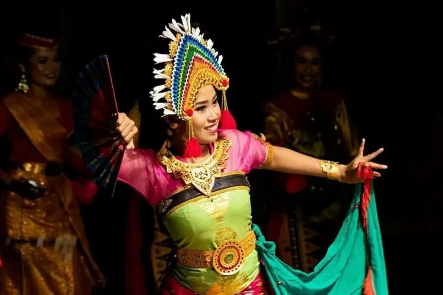
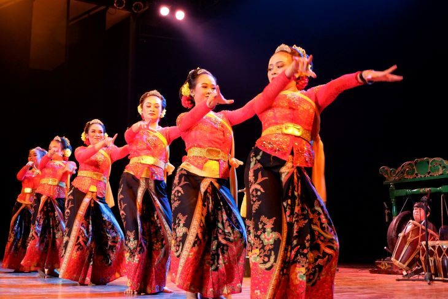
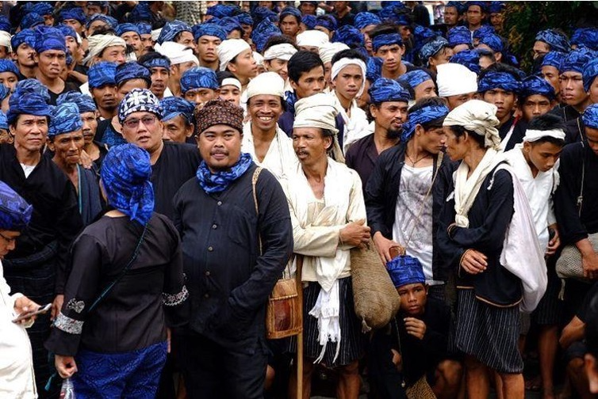
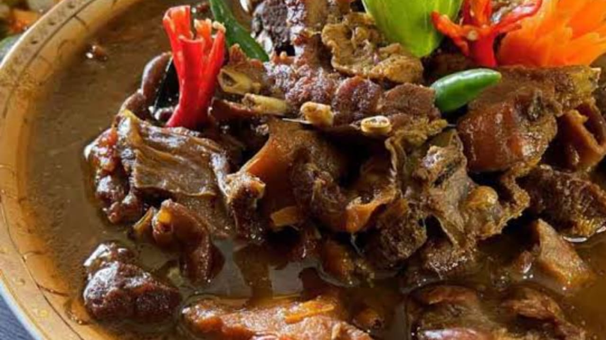
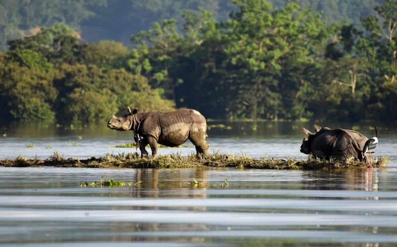

Sumatra
Nusa Tenggara
Maluku
Papua
Banten
Banten adalah sebuah provinsi di Pulau Jawa, Indonesia. Ibu kota dan pusat pemerintahannya berada di Kota Serang. Provinsi ini merupakan provinsi yang paling barat di Pulau Jawa. Provinsi ini pernah menjadi bagian dari provinsi Jawa Barat, tetapi provinsi ini menjadi wilayah pemekaran sejak tahun 2000, dengan keputusan Undang-Undang Nomor 23 Tahun 2000. Suku aslinya adalah suku Sunda Banten yang berada di wilayah Kabupaten Serang bagian selatan, Kabupaten Pandeglang, Kabupaten Lebak, serta sebagian besar Kabupaten Tangerang, dan komunitas masyarakat adat yakni suku Badui yang mendiami wilayah Gunung Kendeng dan Leuwidamar di Kabupaten Lebak.
Informasi Umum
| Nama Provinsi | Kode Wilayah | Kode Internasional | Singkatan Umum | Ibu Kota | Hari Libur | Lambang |
|---|---|---|---|---|---|---|
| Banten | 36 | ID-BT | - | Serang | 4 Oktober 2000 |
Budaya

Sulah nyanda adalah rumah adat orang Badui yang berada di Provinsi Banten. Disebut sulah nyanda, karena atapnya terbuat dari daun nipah yang dikeringkan. Nyanda dalam bahasa Sunda memiliki arti sikap bersandar, sandarannya tidak lurus melainkan agak merebah ke belakang. Salah satu sulah nyanda ini dibuat lebih panjang dan memiliki kemiringan yang lebih rendah pada bagian bawah rangka atap. Rumah tradisional Badui ini disebut juga Imah dan harus menghadap ke selatan. Bentuknya empat persegi panjang dengan atap kampung dan sosoran dipasang di salah satu sisinya. Selain itu, rumah adat ini memiliki hiasan di atas atap rumah yang menyerupai bentuk tanduk.

Pakaian adat Pangsi adalah pakaian yang digunakan dalam keseharian masyarakat banten khususnya mereka yang tinggal di pedesaan yang masih memegang teguh adat istiadat. Jika dilihat dari bentuknya, pakaian adat Pangsi hampir mirip dengan pakaian adat suku Sunda. Adat istiadat Banten besar dipengaruhi oleh adat Sunda, jadi tidak heran jika pakaian adatnya pun hampir mirip. Pakaian adat Pangsi juga digunakan untuk latihan silat tradisional khas Banten. Masyarakat Banten masih sering mengadakan latihan silat dan pakaian yang digunakan adalah pakaian adat Pangsi. Pakaian adat Pangsi digunakan dengan cara dililitkan secara menumpang mirip dengan memakai sarung.
Keunikan tarian tradisional Banten juga menjadi salah satu faktor mengapa banyak wisatawan tertarik untuk berkunjung ke daerah tersebut. Bahkan bukan cuma satu atau dua jenis saja, ada tujuh tarian Banten yang siap membuat Anda terpesona dengan keindahan gerak dan tampilan busananya.

Tarian Ngebaksakeun. Gerak tari ini mengadaptasi pijakan silat terumbu yang merupakan salah satu gaya bela diri dari Kabupaten Pandeglang. Biasanya, masyarakat Banten menyuguhkan tari ngebaksakeun untuk membuka suatu acara atau menyambut tamu penting.

Tarian tradisional Banten ini adalah buah kreasi dari seniman lokal bernama Beni Kusnandar. Tidak sendiri, Beni mengembangkan tarian unik ini bersama sang istri, Wiwin Purwinarti. Di sisi lain, lahirnya tarian ini juga menjadi wujud kepedulian Beni dan istri sebagai seniman Banten yang ingin terus melestarikan adat daerah.
Bahasa utama di Banten merupakan bahasa Sunda Banten yang merupakan bahasa asli penduduk disana. Penduduk asli yang hidup di Provinsi Banten, terutama di Kabupaten Lebak, Kabupaten Pandeglang, Kabupaten Serang bagian selatan, dan Kabupaten Tangerang bagian selatan berbicara menggunakan suatu dialek bahasa Sunda yang disebut sebagai bahasa Sunda Banten yang masih mempertahankan banyak kosakata dari bahasa Sunda Kuno. Dialek tersebut tidak memiliki tingkatan bahasa seperti halnya dialek bahasa Sunda yang dituturkan di wilayah Priangan (bagian selatan Provinsi Jawa Barat).

Tradisi Kawalu merupakan upacara adat Suku Baduy yang dilangsungkan sebelum upacara Seba. Upacara Kawalu ini dilakukan Suku Baduy dengan maksud untuk mengungkapkan rasa Syukur kepada Sang Maha Kuasa Atas anugrah alam yang diberikan. Upacara Kawalu sendiri merupakan upacara adat yang begitu sakral, sehingga tak heran jika seluruh warga Suku Baduy bergotong royong dalam mempersiapkannya. Upacara Kawalu ini wajib diikuti oleh seluruh warga Kanekes terlepas laki-laki, perempuan, anak muda, hingga orang tua. Sementara, untuk lansia dengan keterbatasan fisiknya termasuk perempuan yang sedang haid, tidak diwajibkan untuk mengikuti upacara Kawalu.
Golok adalah senjata tradisional asli Banten dan juga sama seperti senjata tradisional Daerah Khusus Ibukota Jakarta.
Sama seperti angklung reog, terompet reog juga sama-sama digunakan untuk mengiringi tarian adat Reog Ponorogo. Biasanya terompet reog dimainkan bersamaan dengan alat musik tradisional lainnya, seperti angklung reog, gong, kempol, gendang, dan kenong. Terompet reog memiliki bentuk yang sangat unik. Alat musik tradisional Jawa Timur ini terbuat dari bambu dan tempurung kelapa. Bentuknya yang unik memberikan daya tarik tersendiri untuk terompet reog. Ukurannya yang besar di bagian bawah dan mengerucut, serta adanya sekat dari tempurung kelapa. Tidak lupa terdapat 6 lubang yang berfungsi sebagai pengatur nada saat terompet ditiup.
Dayung Sampan adalah sebuah lagu daerah yang berasal dari Banten. Lagu Dayung Sampan merupakan jenis lagu yang cukup populer dan kerap didendangkan di acara kesenian. Lagu Dayung Sampan memiliki makna tentang kegiatan masyarakat yang berprofesi sebagai nelayan. Liriknya bercerita tentang kehidupan seorang nelayan saat mendayung sampan ke tengah lautan. Hal ini juga lekat dengan budaya masyarakat di pesisir Banten yang berprofesi sebagai nelayan.
Kuliner
Rabeg merupakan makanan khas Banten yang bahan dasarnya daging dan jeroan kambing. Sepintas, rabeg menyerupai tengkleng. Namun, kuliner ini memiliki aroma kuat khas Timur Tengah, dengan cita rasa manis, gurih, dan sedikit pedas. Bagi yang tidak suka daging kambing dapat diganti dengan daging sapi atau mencampurkan keduanya.
Destinasi Wisata
Taman Nasional Ujung Kulon terletak di Semenanjung Ujung Kulon, bagian paling barat di Pulau Jawa, Indonesia. Kawasan taman nasional ini pada mulanya meliputi wilayah Krakatau dan beberapa pulau kecil di sekitarnya seperti Pulau Handeuleum dan Pulau Peucang dan Pulau Panaitan. Kawasan taman nasional ini mempunyai luas sekitar 122.956 Ha, yang dimulai dari tanah genting Semenanjung Ujung Kulon sampai dengan Samudra Hindia.
Ujung Kulon merupakan taman nasional tertua di Indonesia yang sudah diresmikan sebagai salah satu Warisan Dunia yang dilindungi oleh UNESCO pada tahun 1991, karena wilayahnya mencakupi hutan lindung yang sangat luas. Sampai saat ini kurang lebih 50 sampai dengan 60 badak hidup di habitat ini.